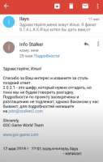
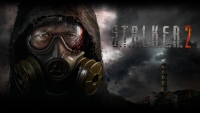
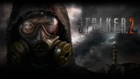

Развитие событий
Развитие событий, задокументированное анонами из треда.
(на правах копипасты http://arhivach.net/thread/645486/#36658511)
5 мая 2018г Грига анонсирует игру постом в фейсбуке
В тот же день Галёнкин палит инфу по движку.
29 мая 2018 г В подкасте «Как делают игры», Галёнкин поделился инсайдерской информацией о том что игру не планировали анонсировать - Григорович сделал это ни с кем не советуясь. Так же он рассказал что игры нету и разработка находится на стадии диздоков - наверняка мы этого знать не можем, но позже некоторые заявления подтвердятся.
28 марта 2019 обновляют сайт, на котором присутствует два арта. Я подчёркиваю - первый официальный арт по сталкер 2 за всё время. И что мы получили?
Первый оказывается рисовался для говномода Noises of the zone, а второй является вообще стоп-кадром с какого-то популярного муз-клипа с youtube, его же и удаляют с сайта когда это узнают люди - двойной обсёр
18 августа 2019 г сотрудники ГСЦ, в составе около 10-12 человек, с ног до головы обвешанные мерчем СТАЛКЕР 2, посетили Gamescom в Кёльне. За пару дней до поездки в своих инстаграмм-страничках недвусмысленно намекали о том что «будет интересно». Все кто хоть сколько-то следил за новостями, сидели у экранов до самого завершения трансляции. Не увидев ничего относящегося к СТАЛКЕР 2 был устроен бунт на официальном сервере в дискорде, после чего некто под ником Angrymoderator в туже ночь, включив режим Аршавина, написал огромную простыню текста, о том что они ничего никому не обещали, и если кто-то не доволен, то это его проблемы. Канал был заблокирован примерно на сутки, а десятки юзеров забанены.
31 декабря 2019 г эпики сливают движок, Захарка пару дней мнётся и потом они признаются что это правда - обсёр
12 января 2020 г, В посте про фотограмметрию указывают версию движка - UE 4
13 мая 2020 г эпики анонсируют UE 5 и вдруг, пысы заявляют, что мы не знаем версию движка сталкера. Попытка нагнать тайны, а по факту обсёр, потому что уе4
23 марта 2020 г, в годовщину ТЧ выкладывают первый официальный скриншот СТАЛКЕР 2, скриншот не ингейм, всё вокруг переднего плана обмазано мылом, так что вся сцена выглядит как диорама - обсёр
Весь шифр сплошной обсёр на каждом его этапе. И как вершина этого обсёра - шифр разгадали с помощью гугла, никто из победителей не разгадал последнюю часть, этот сайт просто выдавало в гугле - МЕГА обсёр длиной в плотора года
23 июля на презентации микромягких показали первый официальный трейлер СТАЛКЕР 2, трейлер не ингейм опять все задники замылены, все сцены - диорамы. Артефакт светится аки жопа фанатов, электра сделана из спрайтов из гугла, анимация сталкера у дуги выглядит будто из мультика пиксар - не просто обсёр, а настоящий позор
Так же в трейлере был обнаружен отрывок поэмы «Катерина» за авторством Тараса Шевченко, где фигурировало слово «Москаль». Многие в защиту разработчиков говорили что это просто дань уважения великому автору, но разве колба с мутантом в жёлтой жиже это подходящее место для такого?
И даже если разработчики не закладывали сюда скрытого смысла (выбрав именно этот фрагмент, а не любой другой) то это в любом случае обсёр, потому что это чёрный пиар на сраче, а такой проект как СТАЛКЕР 2 не нуждается этом. Захар пробует себя в грязных играх, усвоен уровк или нет, увидим во втором трейлере.
Про шифр
(на правах копипасты http://arhivach.net/thread/645705/#36663662)
точнее потом они это называли даже ARG, но видимо не загуглили что это значит
О том что 2.0.2.1. это шифр долго никто и не знал.
28 декабря 2018-ого мистер антишнапс выпустил ролик, где рассказал что ему один из подписчиков прислал скрин переписки с gsc о том что 2.0.2.1. это шифр.
Переписка датировалась 29 мая. Возможно что эту переписку сделали сами пысы, потому что никто не разгадывал их "шифр".

По сути разгадка шифра и началась 28 декабря 2018-ого, после ролика шнапса.
ЧАСТЬ 1
25 января 2019-го пысам была отправлена разгадка первой части (2021-1986). Которую человек получил просто перебирая числа, складывая и отнимая. То есть по сути на рандоме. Он сам об этом в последствии и рассказал. Никакого смысла тут нету, но все понадеялись что дальше будет лучше (нет)

6 февраля 2019-го пысы ему ответили вконтакте и сказали что он прав и выкатили пост о том что первая часть разгадана, тем самым предложив всем разгадывать следующую часть. Тут же стоит отметить что начиная именно с 6 февраля за этот шифр взялись всерьёз довольно много людей, потому что до этого дня про существование шифра знали только те кто видели ролик антишнапса.
С этого дня организовалось несколько конф в вк и люди начали гадать, непрерывно отсылая пысам версии, и на каждую версию они получали в ответ "это не ведет к следующей части" и так далее. Хотя следующую часть невозможно было разгадать без обновления сайта, потому что на нём была морзянка. Но пысов это не парило, ведь можно продолжать дурить головы людям.
21 февраля они вообще всех запутали ответив что ASCII это правильное направление (впоследствии абсолютно нет) из-за чего не мало людей на ней свихнулись.
Ответ: 35
ЧАСТЬ 2
28 марта 2019-го внезапно они решили обновить сайт, создать дискорд-сервер (на котором в последствии будут перлы про песочного человека) а так же группу вк. На сайте появился арт (изначально рисовавшийся для мода Noises of the zone) и один трек. В треке была морязнка, которую расшифровали в тот же вечер.
Не знаю, слышит ли меня кто-нибудь.
Но это неважно, я привык к одиночеству.
Я больше не боюсь.
Зона дала всему смысл.
Мне нужно дождаться.
Естественно эту морзянку начали слать пысам, которые или не думали что её так быстро расшифруют или просто не придумали следующую часть шифра. В этом и кроется проблема номер раз - никто нихера не понимал что из себя должна представлять вторая часть и сколько их всего. Никакой логической связи с первой частью в итоге не оказалось. Перепробаваны были буквально сотни, может даже тысячи теорий. На всё пысы отвечали - нет. Причём иногда ответа на теорию приходилось ждать месяцами.
Именно эта часть и подтверждает что пысы сделали этот шифр для затяжки времени, во-первых потому что в ней нет никакой логики и связи с предыдущей (и следующей) частью, а во-вторых потому что чтобы узнать правильная твоя версия или нет нужно было писать им сообщение и ждать неделю-месяц-два ответа (таким образом они полностью контролировали момент разгадки). Тогда же у нормисов среди дешифровщиков начали появляться догадки о том что пысы тянут время и шифра нет и они просто выберут понравившеюся теорию.
Так и произошло.
11 февраля 2020-ого, больше чем через ГОД после разгадки первой части, они видимо решили что пора разжигать интерес и засчитали вторую часть. Теория которую они засчитали настолько бредовая, насколько это вообще блять возможно. Человек представил фразы из морзянки в виде тире и точек (не спрашивайте почему) и решил что это "--..." с морзе это цифра 7, которую он прислал пысам. Которые по сути ему и подсказали про азот. Это такой бред что даже описать я это не могу. Какой нахер АЗОТ? почему? В чём смысл? Как связан текст морзянки и АЗОТ ? Никак, никакого смысла. Просто вот так. Человек просто абсолютно притянуто за уши прислал им цифру 7 а они ему подсказали что это нужно сопоставить с элементом в таблице менделеева, опять же смысла - ноль.
Без этой подсказки НЕВОЗМОЖНО было бы предположить что ответ на вторую часть это БУКВА да ещё и латинская.
От себя добавлю что мне тоже засчитали ответ на эту часть, якобы я шел правильным путём (а не шизоидным как расписал выше). По версии пыс правильная разгадка второй части это сложить точки и тире (156 точек и 149 тире), ВЫЧЕСТЬ из первого второе, получить цифру 7. И после этого, почему-то я должен был догадаться что цифра семь это N = АЗОТ.
Короче абсолютно шизоидный бред который они притянули не то что "за уши" а я даже не знаю за что.
Ответ: N
ЧАСТЬ 3
На следующий день 12 февраля 2020-ого на сайте появилось окно для ввода текста, куда нужно было написать "ключ-фразу". Какую ключ фразу? С чем она должна быть связана? Наверное с предыдущими частями шифра? Ведь пысы тысячу раз сказали что всё связано, да? А вот хуй там.
Через пару часов вбивания всего подряд в это окно, в дискорде один из челиков абсолютно на рандоме ввёл в это окно название ачивки из ЗП, которая звучит как "Хранитель тайн". Почему он ёё ввёл? Почему он вообще решил ввести в окно название ачивки, при том что предыдущие части разгадывались арифметически? Просто так, на рандоме, о чём сам тогда же и сказал. Никакого смысла в этом нету, никакой логикой разгадка не подкреплена. В последствии окажется что к этой ачивке мы должны были придти через Азота (персонажа) мол каноничное(что?) прохождение квеста с беспилотником не через новикова, а именно через Азота. Автор этой версии про каноничность прохождения - небезызвестный Рок пескович. Вот так Имея Букву N (взятую с потолка) мы должны были понять что в сайт нужно вводить название АЧИВКИ блять (я до сих пор в шоке).

После ввода названия ачивки в браузере открывалась фотография с кучей предметов и бумажек. Сразу скажу что в методанных фотки была дата создания - 15 декабря 2019-ого. То есть эта часть была придумана за два месяца до разгадки, а не два года назад.
На фотографии нам открывалась третья часть шифра автоматически - Х16 (почему-то)
Ответ: Х16
ЧАСТЬ 4
Сразу скажу что четвертую часть НИКТО не разгадал, но если по порядку, то:
На фотке было найдено столько зацепок что просто охуеть и все они оказались случайными и бессмысленными, например:
1. карта подземки без пометки тайника стрелка (ебаные зуммеры каэмы об этом даже не задумались) зачем тут карта ? просто так
2. Фото чаэс именно 86-ого года. Так никто и не понял нахуя она тут нужна была. Нет бы отослаться к фотографии из сна стрелка, но они ж блять не в курсе про сны стрелка.
3. Нож воткнутый в листок оказался просто ебаным ножом без всякой смысловой нагрузки, зачем нож ? просто так
4. Все эти вещи включая фотографию призрака никак не могли принадлежать любому из персонажей игры, это просто нагромождение всего подряд, зачем ? просто так
5. Все эти бумажки кроме той что под ножом - опалены. Почему? тоже просто так
6. Координаты отеля на листе 51.406876, 30.058353 а в реальности же координаты отеля "Полесье" 51.4067 30.0588 - им блять сложно было загуглить ?
7. Почему на этой записке после "стрелок" стоит вопросительный знак, нахуя на записке которую доёт болотник стрелку писать "стрелок?" - просто так
8. Записка единственная из 5 листов имеет следы складывания - просто так

18 февраля 2020-ого шифр закончился.
Стоит сказать что к этому моменту людей на сервере дискорда где в основном и разгадывали шифр стало чуть меньше чем дохуя. Все спамили теориями и пытались как-то подвязать фотку. Но это же шифр от ГээСЦэ, нахуя нам эта фотка, да? Да! Разгадать этот шифр оказывается возможно и без всего этого.
Один чел (который до сих пор ждёт компьютер за "разгадку", а сегодня уже 02.01.2021) решает вбить уже известные части вместо точек в 2.0.2.1. и делает он это в строке гугла. То есть вбивает 2350N2X161 и всё, гугл выдаёт ему сайт. Вот так и разгадали. А четвертую часть уже потом притянули за уши про цифры на приборе в тайнике стрелка. Сейчас сайт доступен по адресу 2350N2X161233
Ответ: отсутствует
Главная претензия - абсолютно бессмысленные и не связанные между собой части разгадки, отгадать которые без подсказок и рандома было невозможно (Все три части были отгаданы на рандоме, а четвертая и вовсе не была отгадана)
Но даже это можно было бы простить новопысам, но то что этот шифр пустышка и абсолютно никак не связан с игрой - этому нет прощения. В подарок за двухгодовую разгадку они дают шмотки, это просто низко. Большинство из нормальных шарящих ребят до конца думали что это АРГ которая завязано на СТАЛКЕР2, но всё оказалось совсем не так.


 
